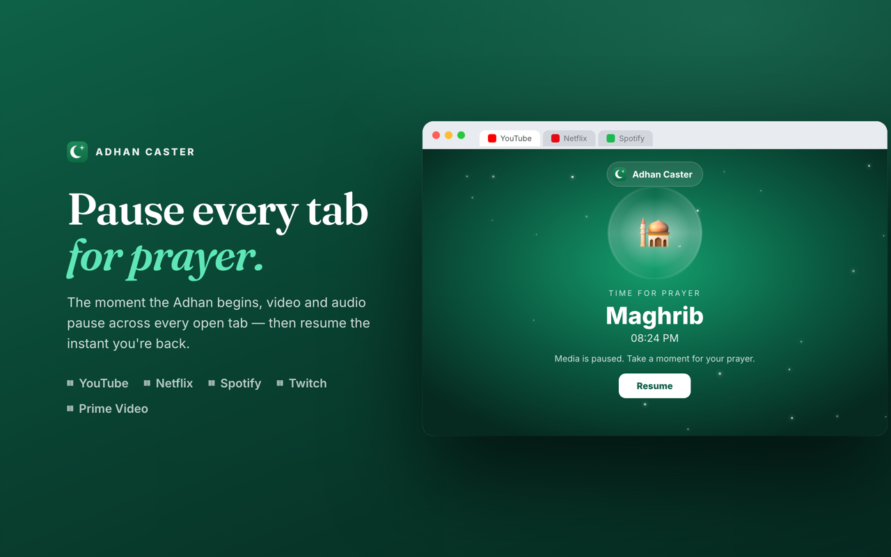
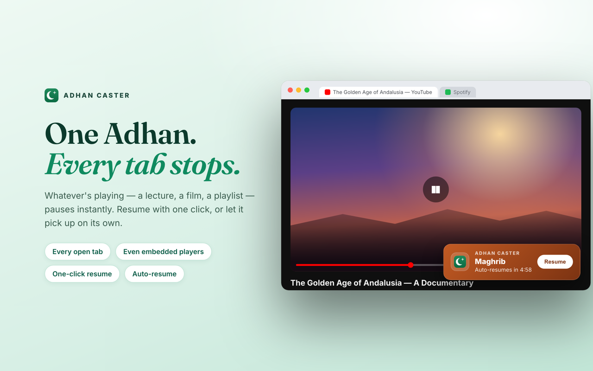
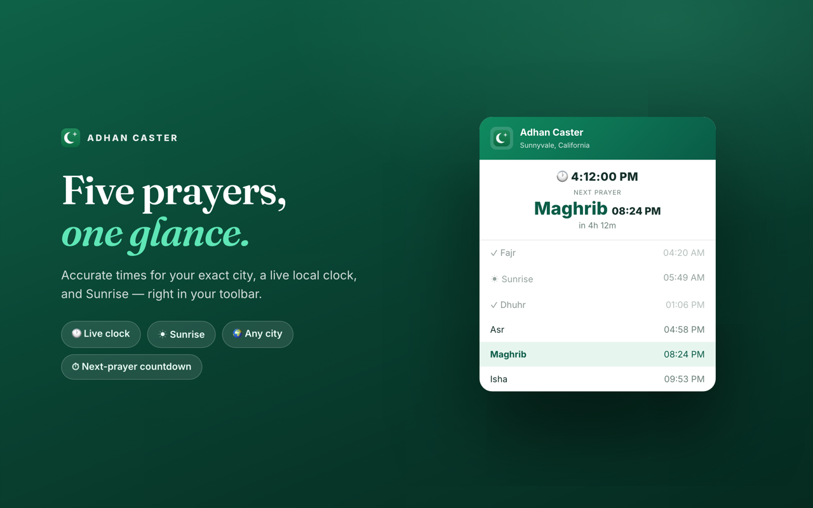

Never miss a prayer,
even mid-stream.
Adhan Caster shows your Muslim prayer times with a live countdown — and the moment the Adhan begins, it automatically pauses video & audio in every Chrome tab.
✓ No ads✓ No account✓ No tracking✓ Manifest V3

Built so the Adhan always comes first
Everything you need to pray on time without babysitting a clock or a browser tab.
Live prayer countdown
All five daily prayers — Fajr, Dhuhr, Asr, Maghrib, Isha — with a second-accurate countdown to the next one.
Auto-pause every tab
The instant the Adhan starts, video and audio across all your open tabs pause automatically — even cross-origin iframes.
One-click resume
Resume playback whenever you're back, or let it auto-resume after a delay you set. You stay in control.
Heads-up countdown
An in-page nudge 15, 30, or 60 seconds before the Adhan — your choice — so you're never caught off guard.
Prayer Focus screen
An optional full-screen focus mode during the Adhan. Toggle with Ctrl/Cmd+Shift+Y; dismiss with Resume or Esc.
Accurate for your city
Search any city worldwide; prayer times are calculated for your exact location. No GPS permissions needed.
How it works
Set it once. It runs quietly in the background, five times a day.
Pick your city
Search and select your location. Adhan Caster fetches the day's prayer schedule and starts the countdown.
Keep browsing
Work, study, watch lectures, listen to music. A heads-up appears shortly before each prayer.
The Adhan pauses everything
Media stops across all tabs so you can pray. Resume with one click — or let it auto-resume for you.
See it in action
Clean, distraction-free, and right where you already are — your browser.


Your worship is private. So is your data.
No business model hiding in the background. Adhan Caster collects nothing.
The only data that leaves your device is the city name needed to look up prayer times. Read the privacy policy →
Frequently asked questions
Quick answers before you install.
Is Adhan Caster free?
Yes — completely free and open source (MIT). No ads, no subscriptions, no premium tier, and no account required.
Does it really pause video and audio in every tab?
Yes. The instant the Adhan begins, it pauses any playing video or audio across all of your open Chrome tabs, including content inside iframes. You can resume with one click or have it auto-resume after a delay you choose.
Is my location or browsing tracked?
No. There is no analytics and no tracking of any kind. Your settings and location stay on your device. The only thing sent off-device is the city name needed to fetch prayer times.
Which prayers and calculation does it use?
It shows all five daily prayers — Fajr, Dhuhr, Asr, Maghrib, and Isha — using an Aladhan-based prayer-time service, calculated for the city you select.
Does it work on Edge or Firefox?
It's built for Chrome (Manifest V3) and works on Chromium browsers. Edge and Firefox builds are on the roadmap — star the GitHub repo to follow along.
Pray on time, even on a busy day.
Add Adhan Caster to Chrome and let your browser remember the Adhan for you.
Add to Chrome — it's free